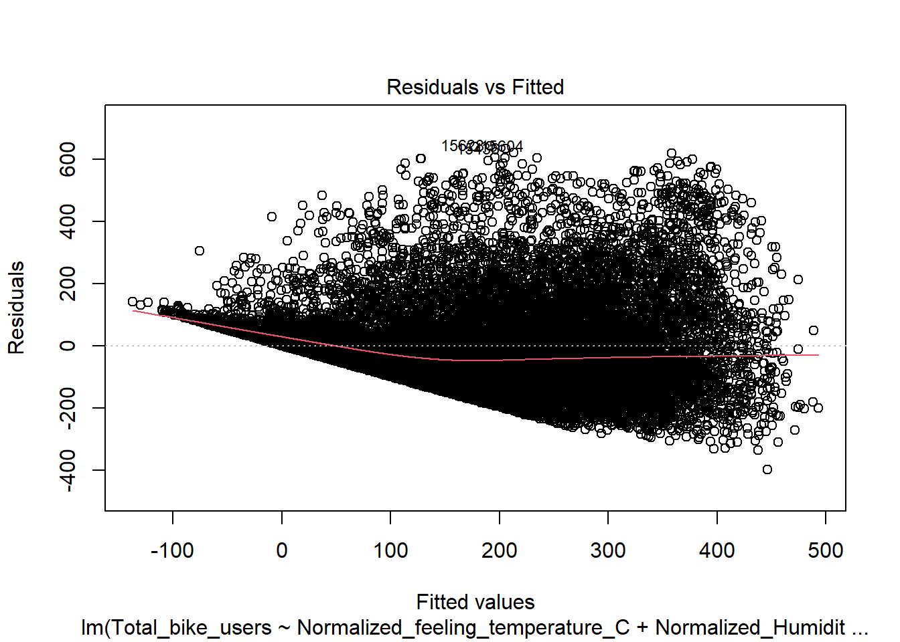
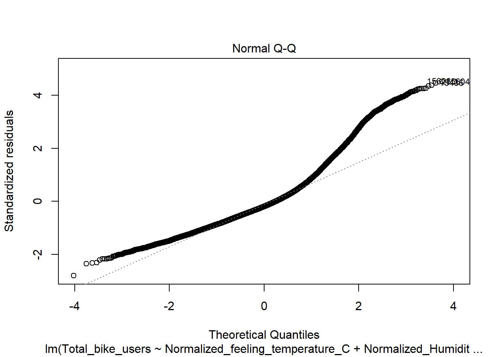
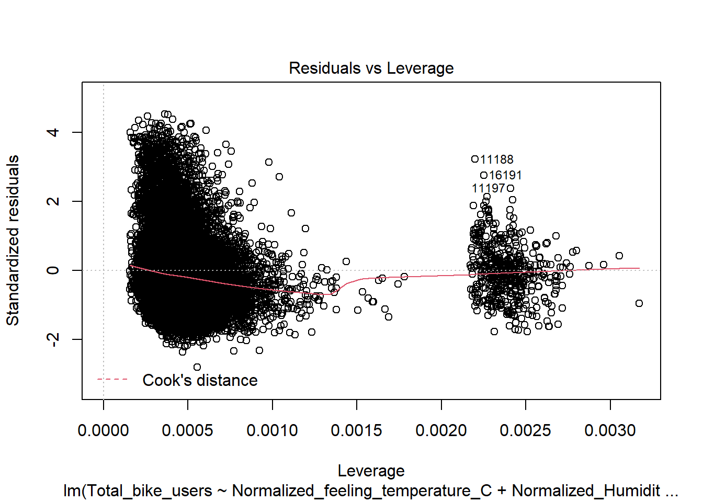
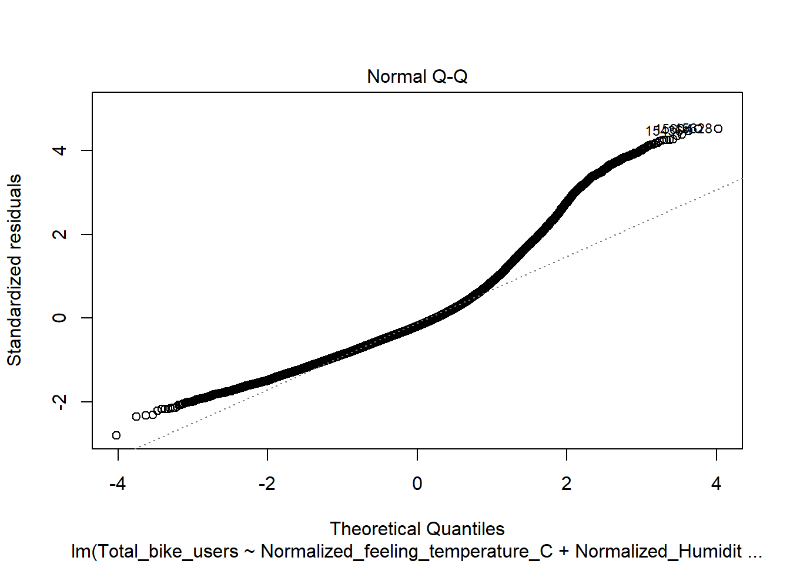
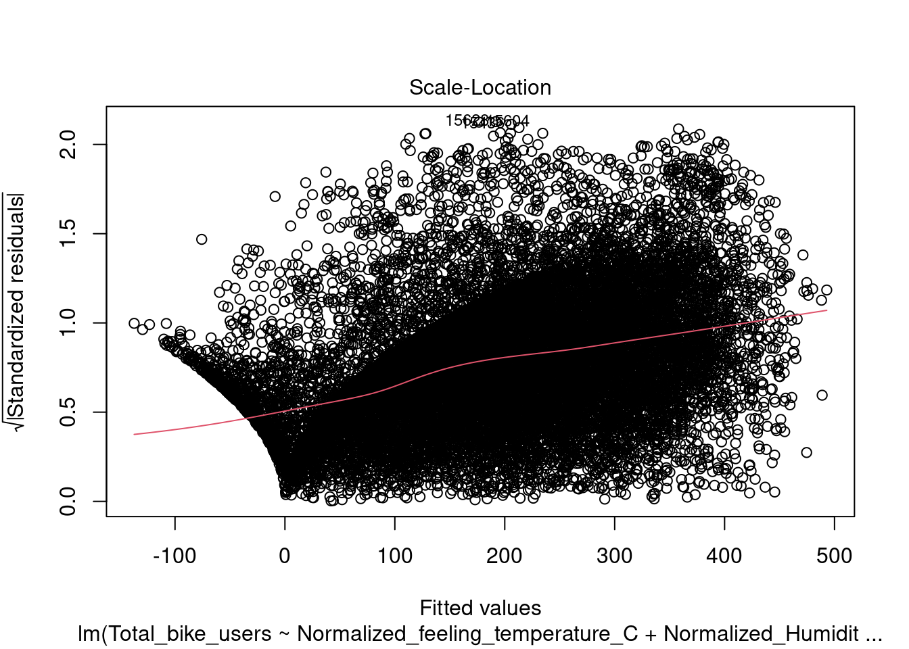
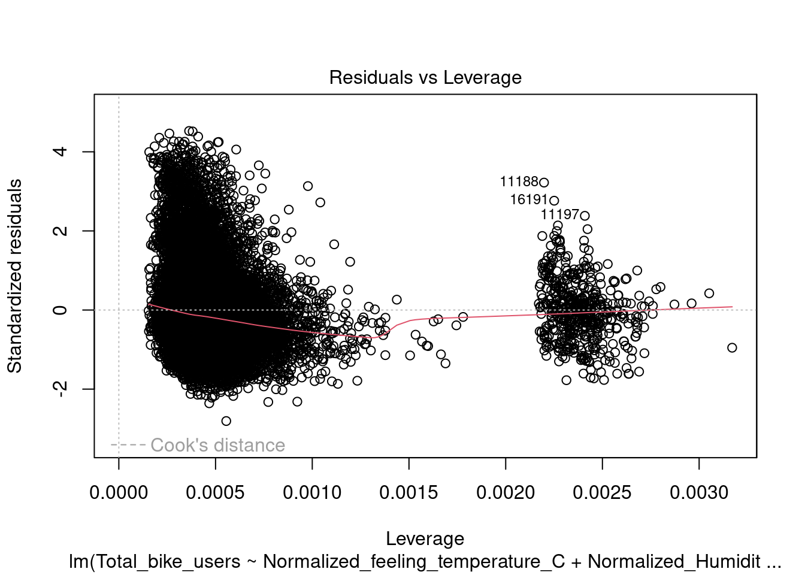
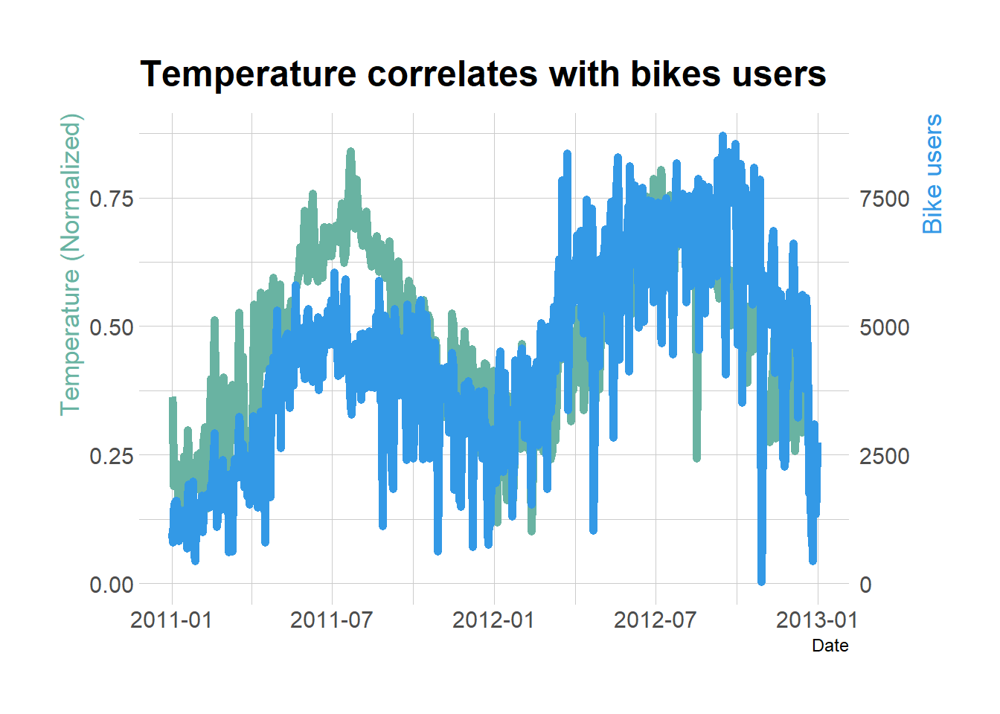

Temperature and Humidity impact on number of bike users
Author
Ethan Campbell
Published
November 11, 2022
Introduction
Climate has always been a topic that sparks debate and there is continuous research being done on it every day. I wanted to contribute to this research and analyze the impacts climate factors like temperature and humidity have on bike users. There has been study related to weather conditions and biking and whether or not it results in more accidents which concluded in an increase in accidents. “It suggests that weather conditions should be considered in every analysis where bicycle volume data is needed” (Pazdan, 2020). The paper describes the importance of weather condition and how they should be used in any analysis regarding biking data. Here, I thought about if we know that these factors are important, how important are they? I can find this data online somewhere however, I would like to conduct my own study and determine the results from that and then compare it to results online.
Research Questions
A. How has temperature and humidity impacted bike users?
My motivation is driven by my own interest in biking and climate factors and the study of how the climate is impacting human movement. I think it is interesting how significant climate factors can impact certain human activities and I want to learn more about which ones are presenting the largest impact on human activity. The reason this study is different is that it is based on normalized data and is focusing how bikers are impacted by weather condition.
Hypothesis
My hypothesis is testing how and if climate factors like temperature and humidity have an impact on bike users. I am hypothesizing that temperature will have the largest impact on bike sales. I believe temperature will mostly cause it to increase as nicer weather would be good for a ride. However, I believe at a certain point it will dip down and no longer be as positive. I hypothesize that as humidity increases then the number of bike users drop since the biking conditions will grow away from the ideal conditions. This study will use normalized feeling temperature and normalized humidity compared to daily and hourly bike users. This study is using new data compared to the research documents that have been observed online and presents a new view to either support or reject their claims.
The hypothesis will be tested as follows:
H0A
Temperature does not impact bike users
H1A
Temperature does impact bike users
H0A
Humidity does not impact bike users
H1A
Humidity does impact bike users
Analytic Planning
flowchart LR
A[Importing Data] --> B(Data Cleaning)
B --> C[Descriptive Statistics]
C --> D(Hypothesis testing)
D --> E[Backward Elimination]
E --> F[Regression Analysis 1]
F --> G[Research Question 1]
G --> H(Conclusion)
E --> I[Regression Analysis 2]
I --> J[Research Question 2]
J --> H(Conclusion)
bike <-read.csv("_data/hour.csv")bike2 <-read.csv("_data/day.csv")dim(bike)
[1] 17379 17
Code
dim(bike2)
[1] 731 16
Code
summary(bike)
instant dteday season yr
Min. : 1 Length:17379 Min. :1.000 Min. :0.0000
1st Qu.: 4346 Class :character 1st Qu.:2.000 1st Qu.:0.0000
Median : 8690 Mode :character Median :3.000 Median :1.0000
Mean : 8690 Mean :2.502 Mean :0.5026
3rd Qu.:13034 3rd Qu.:3.000 3rd Qu.:1.0000
Max. :17379 Max. :4.000 Max. :1.0000
mnth hr holiday weekday
Min. : 1.000 Min. : 0.00 Min. :0.00000 Min. :0.000
1st Qu.: 4.000 1st Qu.: 6.00 1st Qu.:0.00000 1st Qu.:1.000
Median : 7.000 Median :12.00 Median :0.00000 Median :3.000
Mean : 6.538 Mean :11.55 Mean :0.02877 Mean :3.004
3rd Qu.:10.000 3rd Qu.:18.00 3rd Qu.:0.00000 3rd Qu.:5.000
Max. :12.000 Max. :23.00 Max. :1.00000 Max. :6.000
workingday weathersit temp atemp
Min. :0.0000 Min. :1.000 Min. :0.020 Min. :0.0000
1st Qu.:0.0000 1st Qu.:1.000 1st Qu.:0.340 1st Qu.:0.3333
Median :1.0000 Median :1.000 Median :0.500 Median :0.4848
Mean :0.6827 Mean :1.425 Mean :0.497 Mean :0.4758
3rd Qu.:1.0000 3rd Qu.:2.000 3rd Qu.:0.660 3rd Qu.:0.6212
Max. :1.0000 Max. :4.000 Max. :1.000 Max. :1.0000
hum windspeed casual registered
Min. :0.0000 Min. :0.0000 Min. : 0.00 Min. : 0.0
1st Qu.:0.4800 1st Qu.:0.1045 1st Qu.: 4.00 1st Qu.: 34.0
Median :0.6300 Median :0.1940 Median : 17.00 Median :115.0
Mean :0.6272 Mean :0.1901 Mean : 35.68 Mean :153.8
3rd Qu.:0.7800 3rd Qu.:0.2537 3rd Qu.: 48.00 3rd Qu.:220.0
Max. :1.0000 Max. :0.8507 Max. :367.00 Max. :886.0
cnt
Min. : 1.0
1st Qu.: 40.0
Median :142.0
Mean :189.5
3rd Qu.:281.0
Max. :977.0
Data
The data was collected from UCI machine learning repository. Where I collected for both daily and hourly information for 17 variables. Each variable is described below. Important variables will be in bold. Their relationship towards the analysis will be described underneath this section.
instant - This is the record index. This is the count of how many rows there are. This object will not be utilized in this study
dteday - This is the date. The date is currently in year-day-month format. This will be used to observe change over time
season - This is the 4 seasons. This is expressed as: 1-Winter, 2-Spring, 3-Summer, 4- Fall. This will be used as a control variable since this could impact the sales of bikes and the independent variables
yr - This is the year ranging from 2011-2012. This will be used analyze change over each year.
mnth - This is the month 1-12. This will be used to analyze the change over months.
hr - This is hour 0-23. This will be used to analyze the change by the hour.
holiday - This is the holidays so whether or not it is a holiday. This will be used as an independent variable in conjunction with another
weekday - Day of the week.
workingday - if day is neither weekend nor holiday is 1, otherwise is 0.
weathersit -
1: Clear, Few clouds, Partly cloudy, Partly cloudy
4: Heavy Rain + Ice Pallets + Thunderstorm + Mist, Snow + Fog
temp - Normalized temperature in Celsius. The values are derived via (t-t_min)/(t_max-t_min), t_min=-8, t_max=+39 (only in hourly scale)
atemp - Normalized feeling temperature in Celsius. The values are derived via (t-t_min)/(t_max-t_min), t_min=-16, t_max=+50 (only in hourly scale)
hum - Normalized humidity. The values are divided to 100 (max)
windspeed - Normalized wind speed. The values are divided to 67 (max)
casual - count of casual users
registered - count of registered users
cnt - count of total rental bikes including both casual and registered
Regression 1
Explanatory - normalized temperature feeling
Outcome - cnt
Control - Season, holiday, weekday, weathersit
Regression 2
Explanatory - Normalized humidity
Outcome - cnt
Control - temperature(normalized and normalized feeling), wind speed, weekday, holiday, weathersit
Regression Model
Interaction Terms
I do not believe I need to use a quardratic or anything like that however, there is heteroskedascity so using a log may help with the funneling?
\[
\hat{Y} = b0 + b1X1+b2X2
\]
Regression Model 1
\[
Cnt = FeelingTemperature + Humidity + Season + Week Day + Hour + Year + Holiday + Windspeed
\]Regression Model 2
\[
Cnt = FeelingTemperature + Humidity + Season + Week Day + Weather Type + Year + Holiday + Windspeed
\]
Cleaning the data
Code
bike <- bike %>% dplyr::rename('Date'= dteday) %>% dplyr::rename('Year'= yr) %>% dplyr::rename('Month'= mnth) %>% dplyr::rename('Hour'= hr) %>% dplyr::rename('Normalized_temperature_C'= temp) %>% dplyr::rename('Normalized_feeling_temperature_C'= atemp) %>% dplyr::rename('Normalized_Humidity'= hum) %>% dplyr::rename("Total_bike_users"= cnt)bike2 <- bike2 %>% dplyr::rename('Date'= dteday) %>% dplyr::rename('Year'= yr) %>% dplyr::rename('Month'= mnth) %>% dplyr::rename('Normalized_temperature_C'= temp) %>% dplyr::rename('Normalized_feeling_temperature_C'= atemp) %>% dplyr::rename('Normalized_Humidity'= hum) %>% dplyr::rename("Total_bike_users"= cnt)bike2$Date <-ymd(bike2$Date)# Checking for multicollinearity (We notice that temp and feeling temp are almost identical) so we removed the normalized temperature form the study since I want to focus on feeling temperature. Also removing instant since it is just the count of rows.bike <- bike[,-11]bike2 <- bike2[,-10]cor(bike[3:16])
Here we are aiming for anything with 95% significance.
This method works by creating a linear model and then analyzing the results and determining which values are not significant and you remove them from the linear regression to drive a more fitted regression. Below I have created this with creating a seed for reproduction and then set the train control with the method cross validation and set the k-folds to 10. Next I tested that on the regression model with everything included and this will test each variable one by one and tell you how many variables are needed to have the most fit model. Here it states that the model with 8 variables is the most fit with both the RMSE and MAE method showing this below, This results in an R squared of 38.8%. This is for the bike data set and when we do it on bike2 data set we see that the number of variables remains the same. They both operate the best at 8 variables anything past that would over fit the data and would result in worse information. This one is showing an r squared at 79.79% which is a pretty good fit for the data. The only variable that does get changed is hour is removed and weather type gets added in. The regression have already been checked for significance but have been placed within the regression section and they are explained there.
Code
# Setting for reproducibilityset.seed(1)# setting repeated k-fold cross validationtrain.control <-trainControl(method ="cv", number =10)# testing it on bike2 tableBackward_temp2 <-train(Total_bike_users ~. -Date -casual -registered, data = bike2,method ="leapBackward", tuneGrid =data.frame(nvmax =1:10),trControl = train.control )results_bike2 <- Backward_temp2$resultskable(results_bike2, digits =4, align ="ccccccc", col.names =c("nvmax", "RMSE", "Rsquared", "MAE", "RMSESD", "RsquaredSD", "MAESD"), caption ="Bike2 Data set Model Evaluation") %>%kable_styling(font_size =16) %>%row_spec(c(8,8,8), background ="cadetblue")
Bike2 Data set Model Evaluation
nvmax
RMSE
Rsquared
MAE
RMSESD
RsquaredSD
MAESD
1
1499.2915
0.4046
1234.5472
106.3199
0.0447
100.5028
2
1081.6159
0.6922
849.4519
84.0027
0.0407
63.9932
3
1001.4803
0.7359
749.4293
75.5464
0.0293
38.5789
4
912.3321
0.7800
678.0571
76.8079
0.0358
51.4441
5
902.9102
0.7841
670.3104
85.8437
0.0392
53.3738
6
886.7729
0.7914
661.4331
86.9188
0.0402
51.9386
7
890.9950
0.7895
663.0067
96.0126
0.0445
55.0536
8
886.8600
0.7913
659.5744
100.0098
0.0469
61.1266
9
880.7110
0.7941
657.1637
100.5697
0.0469
62.2428
10
878.9295
0.7950
655.7529
102.1414
0.0472
61.9084
Figure 1: Table 2 shows the 9th variable being a better fit however, it is wanting to include the index which is just a count of rows and thus has been rejected and I have accepted the 8 variable count
Code
# Here are the 12 variables in ordersummary(Backward_temp2$finalModel)
# Training my model with backward elimination. Removed Date since there are other variables in here that accomplish time and removed # Casual and registered since those two combined create total bike users. Backward_temp1 <-train(Total_bike_users ~. -Date -casual -registered, data = bike,method ="leapBackward", tuneGrid =data.frame(nvmax =1:10),trControl = train.control )# Here it shows the RMSE and MAE saying 8 variables is the best fit results_bike <- Backward_temp1$resultskable(results_bike, digits =4, align ="ccccccc", col.names =c("nvmax", "RMSE", "Rsquared", "MAE", "RMSESD", "RsquaredSD", "MAESD"), caption ="Bike Data set Model Evaluation") %>%kable_styling(font_size =16) %>%row_spec(c(8,8,8), background ="cadetblue")
Bike Data set Model Evaluation
nvmax
RMSE
Rsquared
MAE
RMSESD
RsquaredSD
MAESD
1
166.1289
0.1609
125.9391
4.1424
0.0134
2.7129
2
154.0128
0.2791
113.6634
3.9548
0.0098
2.6805
3
147.8483
0.3357
110.5619
3.6648
0.0112
2.4969
4
143.4815
0.3743
106.5021
3.2789
0.0129
2.4428
5
142.0650
0.3865
105.9022
3.0654
0.0152
2.1619
6
141.9861
0.3872
105.8684
3.1385
0.0149
2.2025
7
141.9563
0.3874
105.8983
3.1446
0.0146
2.1957
8
141.8763
0.3881
105.8692
3.1399
0.0143
2.1592
9
141.8967
0.3880
105.9357
3.1397
0.0141
2.1585
10
141.8735
0.3882
106.0082
3.1303
0.0140
2.1435
Figure 2: Table 2 shows the 9th variable being a better fit however, it is wanting to include the index which is just a count of rows and thus has been rejected and I have accepted the 8 variable count
Code
# Here are the 8 variables in ordersummary(Backward_temp1$finalModel)
Within the first test we notice a fairly low R squared but we also know they are all statistically significant meaning that we can reject the null hypothesis and say yes there appears to be some effect here. Once we implement the model evaluation to the regression we notice a large difference in the r squared.
Here we are looking at two different regression on two different scales. One is on hourly time and the other is on daily time which causes the variables to impact the outcome differently. Here we notice both temperature and humidity are statistically significant in both situations which is further evidence that we can really reject the null.
Code
# Regression 1 both temperature and humiditylm(Total_bike_users ~ Normalized_feeling_temperature_C + Normalized_Humidity + season + weekday + Hour, data = bike) %>%summary()
Call:
lm(formula = Total_bike_users ~ Normalized_feeling_temperature_C +
Normalized_Humidity + season + weekday + Hour, data = bike)
Residuals:
Min 1Q Median 3Q Max
-358.16 -95.48 -30.75 53.96 691.81
Coefficients:
Estimate Std. Error t value Pr(>|t|)
(Intercept) 36.2565 6.0492 5.994 2.09e-09 ***
Normalized_feeling_temperature_C 330.3458 6.9634 47.440 < 2e-16 ***
Normalized_Humidity -229.8928 6.1318 -37.492 < 2e-16 ***
season 19.1274 1.0843 17.640 < 2e-16 ***
weekday 1.9755 0.5586 3.537 0.000406 ***
Hour 7.4868 0.1698 44.090 < 2e-16 ***
---
Signif. codes: 0 '***' 0.001 '**' 0.01 '*' 0.05 '.' 0.1 ' ' 1
Residual standard error: 147.6 on 17373 degrees of freedom
Multiple R-squared: 0.3383, Adjusted R-squared: 0.3381
F-statistic: 1776 on 5 and 17373 DF, p-value: < 2.2e-16
Code
# This was the first regression I made based on my own knowledge and will be used to compare against the one created by the model# We notice that the original had an r squared of 33.8% while this one has a 38.8% which is a large difference and shows the importance of finding the best fitted modelRegression1 <-lm(Total_bike_users ~ Normalized_feeling_temperature_C + Normalized_Humidity + Hour + Year + season + holiday + weekday + windspeed, data = bike)summary(Regression1)
Call:
lm(formula = Total_bike_users ~ Normalized_feeling_temperature_C +
Normalized_Humidity + Hour + Year + season + holiday + weekday +
windspeed, data = bike)
Residuals:
Min 1Q Median 3Q Max
-398.12 -92.84 -27.49 59.81 642.21
Coefficients:
Estimate Std. Error t value Pr(>|t|)
(Intercept) -27.3890 6.7226 -4.074 4.64e-05 ***
Normalized_feeling_temperature_C 321.2238 6.7131 47.850 < 2e-16 ***
Normalized_Humidity -204.3276 6.1144 -33.418 < 2e-16 ***
Hour 7.6326 0.1638 46.608 < 2e-16 ***
Year 81.0198 2.1637 37.445 < 2e-16 ***
season 19.9910 1.0469 19.096 < 2e-16 ***
holiday -24.1092 6.4763 -3.723 0.000198 ***
weekday 1.9179 0.5399 3.552 0.000383 ***
windspeed 43.4284 9.2898 4.675 2.96e-06 ***
---
Signif. codes: 0 '***' 0.001 '**' 0.01 '*' 0.05 '.' 0.1 ' ' 1
Residual standard error: 141.9 on 17370 degrees of freedom
Multiple R-squared: 0.3885, Adjusted R-squared: 0.3882
F-statistic: 1379 on 8 and 17370 DF, p-value: < 2.2e-16
Code
plot(Regression1)



Code
# Regression two on bike2 data set both temperature and humidity. Comparing original regression on bike2 data set here we have an r squared of 50.58%lm(Total_bike_users ~ Normalized_feeling_temperature_C + Normalized_Humidity + weathersit + season, data = bike2) %>%summary()
Call:
lm(formula = Total_bike_users ~ Normalized_feeling_temperature_C +
Normalized_Humidity + weathersit + season, data = bike2)
Residuals:
Min 1Q Median 3Q Max
-4034.7 -1019.5 -183.7 1057.8 4356.6
Coefficients:
Estimate Std. Error t value Pr(>|t|)
(Intercept) 2276.00 260.57 8.735 < 2e-16 ***
Normalized_feeling_temperature_C 6486.06 340.09 19.072 < 2e-16 ***
Normalized_Humidity -1860.81 462.50 -4.023 6.34e-05 ***
weathersit -551.04 119.11 -4.626 4.41e-06 ***
season 436.18 49.21 8.863 < 2e-16 ***
---
Signif. codes: 0 '***' 0.001 '**' 0.01 '*' 0.05 '.' 0.1 ' ' 1
Residual standard error: 1366 on 726 degrees of freedom
Multiple R-squared: 0.5058, Adjusted R-squared: 0.503
F-statistic: 185.7 on 4 and 726 DF, p-value: < 2.2e-16
Code
# Here we have an r squared of 79.74% which is a MAJOR difference this has changed the coefficient of temperature by ~600. This goes to show how inaccurate the first model was. Regression2 <-lm(Total_bike_users ~ Normalized_feeling_temperature_C + Normalized_Humidity + weathersit + Year + season + holiday + weekday + windspeed, data = bike2)summary(Regression2)
Call:
lm(formula = Total_bike_users ~ Normalized_feeling_temperature_C +
Normalized_Humidity + weathersit + Year + season + holiday +
weekday + windspeed, data = bike2)
Residuals:
Min 1Q Median 3Q Max
-4138.0 -425.5 73.3 536.4 2823.2
Coefficients:
Estimate Std. Error t value Pr(>|t|)
(Intercept) 1467.57 228.77 6.415 2.55e-10 ***
Normalized_feeling_temperature_C 5931.29 219.28 27.048 < 2e-16 ***
Normalized_Humidity -1132.22 313.36 -3.613 0.000323 ***
weathersit -592.12 78.49 -7.544 1.37e-13 ***
Year 2038.35 65.50 31.121 < 2e-16 ***
season 407.23 31.91 12.762 < 2e-16 ***
holiday -614.59 195.40 -3.145 0.001728 **
weekday 69.21 16.35 4.234 2.60e-05 ***
windspeed -2449.82 452.25 -5.417 8.27e-08 ***
---
Signif. codes: 0 '***' 0.001 '**' 0.01 '*' 0.05 '.' 0.1 ' ' 1
Residual standard error: 876.8 on 722 degrees of freedom
Multiple R-squared: 0.7974, Adjusted R-squared: 0.7952
F-statistic: 355.2 on 8 and 722 DF, p-value: < 2.2e-16
Residuals vs Fitted(Will need to be adjusted)
This shows signs of heteroskedasticity and this is when standard deviations of a predicated variable being monitored over different values of an independent variable are non-constant. The problems that arise from this issue is, the standard error is wrong and thus the confidence intervals and hypothesis tests can not be relied on. This issues needs to be resolved before declaring the conclusion.
Code
mod <-lm(Total_bike_users ~ .-Date -casual -registered, data = bike)plot(mod)
Here we will conduct the Breusch-Pagan test using the lmtest package and bptest() function. This will let us know if there is heteroskedascity if the P < .05. Here we see that both meet this standard and thus we have evidence to reject the null hypothesis
Code
# Breusch-Pagan test to determine if Heteroskedasticity existbptest(Regression1)
studentized Breusch-Pagan test
data: Regression1
BP = 1450.9, df = 8, p-value < 2.2e-16
Code
bptest(Regression2)
studentized Breusch-Pagan test
data: Regression2
BP = 47.248, df = 8, p-value = 1.375e-07
Code
# both of these are p<.05 meaning that we reject the null hypothesis and say yes there is heteroskedacity
Visualizations
Here we see as temperature increases we can expect bike users to increase while as humidity increases we expect the opposite.
Code
plot(Regression1)



Code
plot(regression2)
Error in plot(regression2): object 'regression2' not found
Code
Bike_users_plot <- bike2 %>%ggplot(aes(x=Date, y=Total_bike_users)) +geom_area(fill="#69b3a2", alpha=0.5) +geom_line(color="#69b3a2") +ylab("total bike user") +theme_ipsum()# Making it interactiveBike_users_plot <-ggplotly(Bike_users_plot)Bike_users_plot
Code
# Value used to transform the datacoeff <-10000# A few constantstemperatureColor <-"#69b3a2"priceColor <-rgb(0.2, 0.6, 0.9, 1)ggplot(bike2, aes(x=Date)) +geom_line( aes(y=Normalized_feeling_temperature_C), size=2, color=temperatureColor) +geom_line( aes(y=Total_bike_users / coeff), size=2, color=priceColor) +scale_y_continuous(# Features of the first axisname ="Temperature (Normalized)",# Add a second axis and specify its featuressec.axis =sec_axis(~.*coeff, name="Bike users") ) +theme_ipsum() +theme(axis.title.y =element_text(color = temperatureColor, size=13),axis.title.y.right =element_text(color = priceColor, size=13) ) +ggtitle("Temperature correlates with bikes users")

Code
# plotting the data to visualize ggplot(data = bike2, aes(x=Normalized_feeling_temperature_C, y = Total_bike_users)) +geom_point() +geom_smooth(method = lm) +theme_fivethirtyeight(base_size =10, base_family ='serif') +theme(axis.title =element_text(family ='serif', size =15)) +ylab('Total Bike Users') +xlab('Normalized Feeling Temperature') +labs(title ="Relationship between Temerpature and Bike users", caption ="")
Code
ggplot(data = bike2, aes(x=Normalized_Humidity, y = Total_bike_users)) +geom_point() +geom_smooth(method = lm) +theme_fivethirtyeight(base_size =10, base_family ='serif') +theme(axis.title =element_text(family ='serif', size =15)) +ylab('Total Bike Users') +xlab('Normalized Humidity') +labs(title ="Relationship between Humidity and Bike users", caption ="")
In conclusion, for hypothesis one we reject the null hypothesis with evidence of the extremely significant p-value of 2e-16. This give us evidence that we can accept the alternative and say yes temperature has an impact on bike sales. There were two different tests done here, we did the daily data compared to the hourly data. Both were significant and we controlled for 7 variables which are specified at the top. The reason we controlled these variables is that they could impact the outcome variable and thus we controlled them to make sure that they were not impacting the results. So in conclusion, normalized feeling temperature Celsius has an impact on bike users. Looking at our correlation graph we can see that it has a positive correlation with bike users at .631.
For the second questions we can also reject the null hypothesis as humidity is significant with a p-value of < 2e-16 in data set one and 0.000323 in data set two. This is further evidence that we can reject the null as in both scales is what significant. This data held the same control variables as temperature and thus we can yes humidity has an impact on bike users and looking at our correlation we see a negative correlation of -.101.
References
Fanaee-T, H. (n.d.). Bike Sharing Dataset . Retrieved from UCI Machine Learning Repository: https://archive.ics.uci.edu/ml/datasets/Bike+Sharing+Dataset
Pazdan, Sylwia. (2020). The impact of weather on bicycle risk exposure. Archives of Transport. 56. 89-105. 10.5604/01.3001.0014.5629.
Source Code
---title: "Final Project"author: "Ethan Campbell"description: "Temperature and Humidity impact on number of bike users"date: "11/11/2022"format: html: df-print: paged toc: true code-fold: true code-copy: true code-tools: true css: "styles.css"categories: - finalpart2---# IntroductionClimate has always been a topic that sparks debate and there is continuous research being done on it every day. I wanted to contribute to this research and analyze the impacts climate factors like temperature and humidity have on bike users. There has been study related to weather conditions and biking and whether or not it results in more accidents which concluded in an increase in accidents. "It suggests that weather conditions should be considered in every analysis where bicycle volume data is needed" (Pazdan, 2020). The paper describes the importance of weather condition and how they should be used in any analysis regarding biking data. Here, I thought about if we know that these factors are important, how important are they? I can find this data online somewhere however, I would like to conduct my own study and determine the results from that and then compare it to results online.::: callout-note## Research QuestionsA. How has temperature and humidity impacted bike users?:::My motivation is driven by my own interest in biking and climate factors and the study of how the climate is impacting human movement. I think it is interesting how significant climate factors can impact certain human activities and I want to learn more about which ones are presenting the largest impact on human activity. The reason this study is different is that it is based on normalized data and is focusing how bikers are impacted by weather condition.# HypothesisMy hypothesis is testing how and if climate factors like temperature and humidity have an impact on bike users. I am hypothesizing that temperature will have the largest impact on bike sales. I believe temperature will mostly cause it to increase as nicer weather would be good for a ride. However, I believe at a certain point it will dip down and no longer be as positive. I hypothesize that as humidity increases then the number of bike users drop since the biking conditions will grow away from the ideal conditions. This study will use normalized feeling temperature and normalized humidity compared to daily and hourly bike users. This study is using new data compared to the research documents that have been observed online and presents a new view to either support or reject their claims.The hypothesis will be tested as follows:::: callout-tip## H~0A~Temperature does not impact bike users:::::: callout-tip## H~1A~Temperature does impact bike users:::::: callout-tip## H~0A~Humidity does not impact bike users:::::: callout-tip## H~1A~Humidity does impact bike users:::# Analytic Planning```{mermaid}flowchart LR A[Importing Data] --> B(Data Cleaning) B --> C[Descriptive Statistics] C --> D(Hypothesis testing) D --> E[Backward Elimination] E --> F[Regression Analysis 1] F --> G[Research Question 1] G --> H(Conclusion) E --> I[Regression Analysis 2] I --> J[Research Question 2] J --> H(Conclusion)```# Library```{r}#| warning: falselibrary(tidyverse)library(plyr)library(dplyr)library(kableExtra)library(lubridate)library(lmtest)library(sandwich)library(GGally)library(caret)library(ggthemes)library(plotly)library(hrbrthemes)```# Descriptive statistics## Reading in the data```{r}bike <-read.csv("_data/hour.csv")bike2 <-read.csv("_data/day.csv")dim(bike)dim(bike2)summary(bike)```## DataThe data was collected from UCI machine learning repository. Where I collected for both daily and hourly information for 17 variables. Each variable is described below. Important variables will be in **bold**. Their relationship towards the analysis will be described underneath this section.- instant - This is the record index. This is the count of how many rows there are. This object will not be utilized in this study- dteday - This is the date. The date is currently in year-day-month format. This will be used to observe change over time- **season** - This is the 4 seasons. This is expressed as: 1-Winter, 2-Spring, 3-Summer, 4- Fall. This will be used as a control variable since this could impact the sales of bikes and the independent variables- yr - This is the year ranging from 2011-2012. This will be used analyze change over each year.- mnth - This is the month 1-12. This will be used to analyze the change over months.- hr - This is hour 0-23. This will be used to analyze the change by the hour.- **holiday** - This is the holidays so whether or not it is a holiday. This will be used as an independent variable in conjunction with another- weekday - Day of the week.- workingday - if day is neither weekend nor holiday is 1, otherwise is 0.- **weathersit** - - 1: Clear, Few clouds, Partly cloudy, Partly cloudy - 2: Mist + Cloudy, Mist + Broken clouds, Mist + Few clouds, Mist - 3: Light Snow, Light Rain + Thunderstorm + Scattered clouds, Light Rain + Scattered clouds - 4: Heavy Rain + Ice Pallets + Thunderstorm + Mist, Snow + Fog- **temp** - Normalized temperature in Celsius. The values are derived via (t-t_min)/(t_max-t_min), t_min=-8, t_max=+39 (only in hourly scale)- **atemp** - Normalized feeling temperature in Celsius. The values are derived via (t-t_min)/(t_max-t_min), t_min=-16, t_max=+50 (only in hourly scale)- **hum** - Normalized humidity. The values are divided to 100 (max)- windspeed - Normalized wind speed. The values are divided to 67 (max)- casual - count of casual users- registered - count of registered users- **cnt** - count of total rental bikes including both casual and registered**Regression 1**- **Explanatory** - normalized temperature feeling- **Outcome** - cnt- **Control** - Season, holiday, weekday, weathersit**Regression 2**- **Explanatory** - Normalized humidity- **Outcome -** cnt- **Control -** temperature(normalized and normalized feeling), wind speed, weekday, holiday, weathersit**Regression Model****Interaction Terms**I do not believe I need to use a quardratic or anything like that however, there is heteroskedascity so using a log may help with the funneling? $$\hat{Y} = b0 + b1X1+b2X2$$**Regression Model 1**$$Cnt = FeelingTemperature + Humidity + Season + Week Day + Hour + Year + Holiday + Windspeed$$ **Regression Model 2**$$Cnt = FeelingTemperature + Humidity + Season + Week Day + Weather Type + Year + Holiday + Windspeed$$## Cleaning the data```{r}bike <- bike %>% dplyr::rename('Date'= dteday) %>% dplyr::rename('Year'= yr) %>% dplyr::rename('Month'= mnth) %>% dplyr::rename('Hour'= hr) %>% dplyr::rename('Normalized_temperature_C'= temp) %>% dplyr::rename('Normalized_feeling_temperature_C'= atemp) %>% dplyr::rename('Normalized_Humidity'= hum) %>% dplyr::rename("Total_bike_users"= cnt)bike2 <- bike2 %>% dplyr::rename('Date'= dteday) %>% dplyr::rename('Year'= yr) %>% dplyr::rename('Month'= mnth) %>% dplyr::rename('Normalized_temperature_C'= temp) %>% dplyr::rename('Normalized_feeling_temperature_C'= atemp) %>% dplyr::rename('Normalized_Humidity'= hum) %>% dplyr::rename("Total_bike_users"= cnt)bike2$Date <-ymd(bike2$Date)# Checking for multicollinearity (We notice that temp and feeling temp are almost identical) so we removed the normalized temperature form the study since I want to focus on feeling temperature. Also removing instant since it is just the count of rows.bike <- bike[,-11]bike2 <- bike2[,-10]cor(bike[3:16])```# Model Evaluation - Backward EliminationHere we are aiming for anything with 95% significance.This method works by creating a linear model and then analyzing the results and determining which values are not significant and you remove them from the linear regression to drive a more fitted regression. Below I have created this with creating a seed for reproduction and then set the train control with the method cross validation and set the k-folds to 10. Next I tested that on the regression model with everything included and this will test each variable one by one and tell you how many variables are needed to have the most fit model. Here it states that the model with 8 variables is the most fit with both the RMSE and MAE method showing this below, This results in an R squared of 38.8%. This is for the bike data set and when we do it on bike2 data set we see that the number of variables remains the same. They both operate the best at 8 variables anything past that would over fit the data and would result in worse information. This one is showing an r squared at 79.79% which is a pretty good fit for the data. The only variable that does get changed is hour is removed and weather type gets added in. The regression have already been checked for significance but have been placed within the regression section and they are explained there.```{r}#| label: fig-cap-margin#| fig-cap: "Table shows the 9th variable being a better fit however, it is wanting to include the instant variable which is just a count of rows and thus has been rejected and I have accepted the 8 variable count"#| cap-location: margin# Setting for reproducibilityset.seed(1)# setting repeated k-fold cross validationtrain.control <-trainControl(method ="cv", number =10)# testing it on bike2 tableBackward_temp2 <-train(Total_bike_users ~. -Date -casual -registered, data = bike2,method ="leapBackward", tuneGrid =data.frame(nvmax =1:10),trControl = train.control )results_bike2 <- Backward_temp2$resultskable(results_bike2, digits =4, align ="ccccccc", col.names =c("nvmax", "RMSE", "Rsquared", "MAE", "RMSESD", "RsquaredSD", "MAESD"), caption ="Bike2 Data set Model Evaluation") %>%kable_styling(font_size =16) %>%row_spec(c(8,8,8), background ="cadetblue")# Here are the 12 variables in ordersummary(Backward_temp2$finalModel)# Training my model with backward elimination. Removed Date since there are other variables in here that accomplish time and removed # Casual and registered since those two combined create total bike users. Backward_temp1 <-train(Total_bike_users ~. -Date -casual -registered, data = bike,method ="leapBackward", tuneGrid =data.frame(nvmax =1:10),trControl = train.control )# Here it shows the RMSE and MAE saying 8 variables is the best fit results_bike <- Backward_temp1$resultskable(results_bike, digits =4, align ="ccccccc", col.names =c("nvmax", "RMSE", "Rsquared", "MAE", "RMSESD", "RsquaredSD", "MAESD"), caption ="Bike Data set Model Evaluation") %>%kable_styling(font_size =16) %>%row_spec(c(8,8,8), background ="cadetblue")# Here are the 8 variables in ordersummary(Backward_temp1$finalModel)```# RegressionWithin the first test we notice a fairly low R squared but we also know they are all statistically significant meaning that we can reject the null hypothesis and say yes there appears to be some effect here. Once we implement the model evaluation to the regression we notice a large difference in the r squared.Here we are looking at two different regression on two different scales. One is on hourly time and the other is on daily time which causes the variables to impact the outcome differently. Here we notice both temperature and humidity are statistically significant in both situations which is further evidence that we can really reject the null.```{r}# Regression 1 both temperature and humiditylm(Total_bike_users ~ Normalized_feeling_temperature_C + Normalized_Humidity + season + weekday + Hour, data = bike) %>%summary()# This was the first regression I made based on my own knowledge and will be used to compare against the one created by the model# We notice that the original had an r squared of 33.8% while this one has a 38.8% which is a large difference and shows the importance of finding the best fitted modelRegression1 <-lm(Total_bike_users ~ Normalized_feeling_temperature_C + Normalized_Humidity + Hour + Year + season + holiday + weekday + windspeed, data = bike)summary(Regression1)# Regression two on bike2 data set both temperature and humidity. Comparing original regression on bike2 data set here we have an r squared of 50.58%lm(Total_bike_users ~ Normalized_feeling_temperature_C + Normalized_Humidity + weathersit + season, data = bike2) %>%summary()# Here we have an r squared of 79.74% which is a MAJOR difference this has changed the coefficient of temperature by ~600. This goes to show how inaccurate the first model was. Regression2 <-lm(Total_bike_users ~ Normalized_feeling_temperature_C + Normalized_Humidity + weathersit + Year + season + holiday + weekday + windspeed, data = bike2)summary(Regression2)```## Residuals vs Fitted(Will need to be adjusted)This shows signs of heteroskedasticity and this is when standard deviations of a predicated variable being monitored over different values of an independent variable are non-constant. The problems that arise from this issue is, the standard error is wrong and thus the confidence intervals and hypothesis tests can not be relied on. This issues needs to be resolved before declaring the conclusion.```{r}mod <-lm(Total_bike_users ~ .-Date -casual -registered, data = bike)plot(mod)summary(mod)```### Resolving Heteroskedasticity::: callout-tip### H~0A~There is no Heteroskedasticity:::::: callout-tip### H~1A~There is Heteroskedasticity:::Here we will conduct the Breusch-Pagan test using the lmtest package and bptest() function. This will let us know if there is heteroskedascity if the P < .05. Here we see that both meet this standard and thus we have evidence to reject the null hypothesis```{r}# Breusch-Pagan test to determine if Heteroskedasticity existbptest(Regression1)bptest(Regression2)# both of these are p<.05 meaning that we reject the null hypothesis and say yes there is heteroskedacity ```## VisualizationsHere we see as temperature increases we can expect bike users to increase while as humidity increases we expect the opposite.```{r}#| warning: falseplot(Regression1)plot(regression2)Bike_users_plot <- bike2 %>%ggplot(aes(x=Date, y=Total_bike_users)) +geom_area(fill="#69b3a2", alpha=0.5) +geom_line(color="#69b3a2") +ylab("total bike user") +theme_ipsum()# Making it interactiveBike_users_plot <-ggplotly(Bike_users_plot)Bike_users_plot# Value used to transform the datacoeff <-10000# A few constantstemperatureColor <-"#69b3a2"priceColor <-rgb(0.2, 0.6, 0.9, 1)ggplot(bike2, aes(x=Date)) +geom_line( aes(y=Normalized_feeling_temperature_C), size=2, color=temperatureColor) +geom_line( aes(y=Total_bike_users / coeff), size=2, color=priceColor) +scale_y_continuous(# Features of the first axisname ="Temperature (Normalized)",# Add a second axis and specify its featuressec.axis =sec_axis(~.*coeff, name="Bike users") ) +theme_ipsum() +theme(axis.title.y =element_text(color = temperatureColor, size=13),axis.title.y.right =element_text(color = priceColor, size=13) ) +ggtitle("Temperature correlation with bikes users")# Value used to transform the datacoeff <-10000# A few constantshumidityColor <-"#69b3a2"bikeColor <-rgb(0.2, 0.6, 0.9, 1)ggplot(bike2, aes(x=Date)) +geom_line( aes(y=Normalized_Humidity), size=2, color=temperatureColor) +geom_line( aes(y=Total_bike_users / coeff), size=2, color=priceColor) +scale_y_continuous(# Features of the first axisname ="Humidity (Normalized)",# Add a second axis and specify its featuressec.axis =sec_axis(~.*coeff, name="Bike users") ) +theme_ipsum() +theme(axis.title.y =element_text(color = temperatureColor, size=13),axis.title.y.right =element_text(color = priceColor, size=13) ) +ggtitle("Humidity correlation with bikes users")# plotting the data to visualize ggplot(data = bike2, aes(x=Normalized_feeling_temperature_C, y = Total_bike_users)) +geom_point() +geom_smooth(method = lm) +theme_fivethirtyeight(base_size =10, base_family ='serif') +theme(axis.title =element_text(family ='serif', size =15)) +ylab('Total Bike Users') +xlab('Normalized Feeling Temperature') +labs(title ="Relationship between Temerpature and Bike users", caption ="")ggplot(data = bike2, aes(x=Normalized_Humidity, y = Total_bike_users)) +geom_point() +geom_smooth(method = lm) +theme_fivethirtyeight(base_size =10, base_family ='serif') +theme(axis.title =element_text(family ='serif', size =15)) +ylab('Total Bike Users') +xlab('Normalized Humidity') +labs(title ="Relationship between Humidity and Bike users", caption ="")ggpairs(bike2, columns =c(10, 11, 15), ggplot2::aes(colour='red'))```## ConclusionsIn conclusion, for hypothesis one we reject the null hypothesis with evidence of the extremely significant p-value of 2e-16. This give us evidence that we can accept the alternative and say yes temperature has an impact on bike sales. There were two different tests done here, we did the daily data compared to the hourly data. Both were significant and we controlled for 7 variables which are specified at the top. The reason we controlled these variables is that they could impact the outcome variable and thus we controlled them to make sure that they were not impacting the results. So in conclusion, normalized feeling temperature Celsius has an impact on bike users. Looking at our correlation graph we can see that it has a positive correlation with bike users at .631.For the second questions we can also reject the null hypothesis as humidity is significant with a p-value of < 2e-16 in data set one and 0.000323 in data set two. This is further evidence that we can reject the null as in both scales is what significant. This data held the same control variables as temperature and thus we can yes humidity has an impact on bike users and looking at our correlation we see a negative correlation of -.101.Once I correct the heteroskedascity then I am curious as to how the information is altered as of right now I am unable to fully accept my claims until these are removed. # References::: {#refs}- Fanaee-T, H. (n.d.). Bike Sharing Dataset . Retrieved from UCI Machine Learning Repository: https://archive.ics.uci.edu/ml/datasets/Bike+Sharing+Dataset- Pazdan, Sylwia. (2020). The impact of weather on bicycle risk exposure. Archives of Transport. 56. 89-105. 10.5604/01.3001.0014.5629.:::